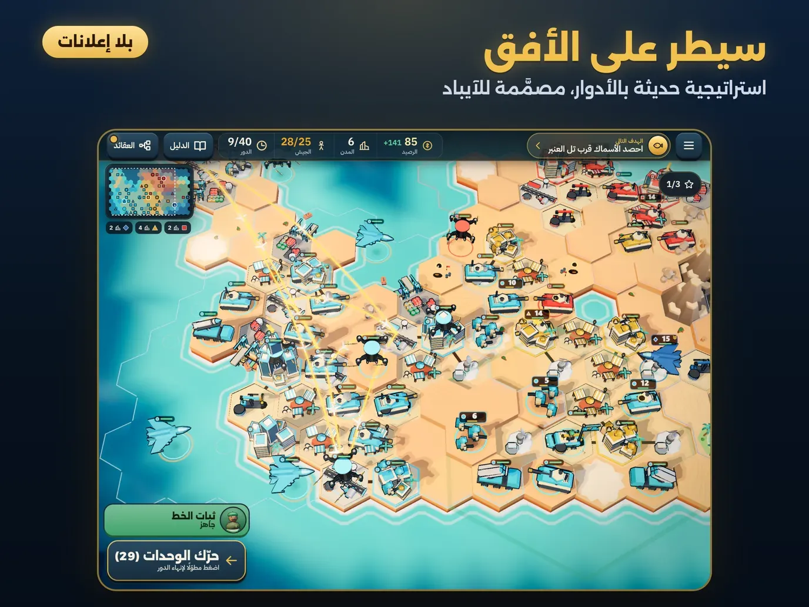
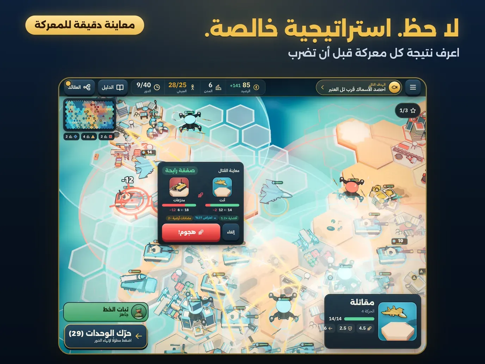
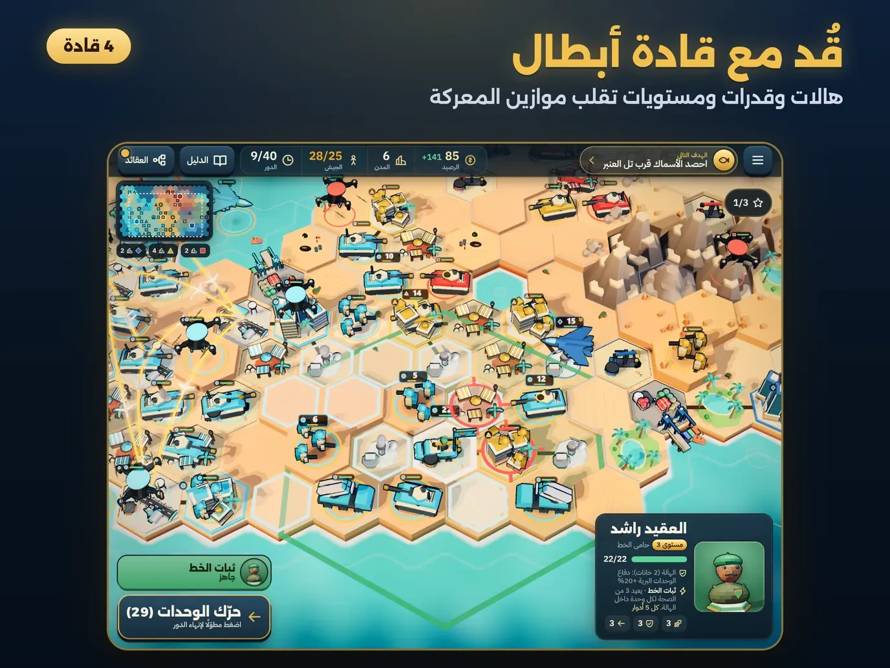
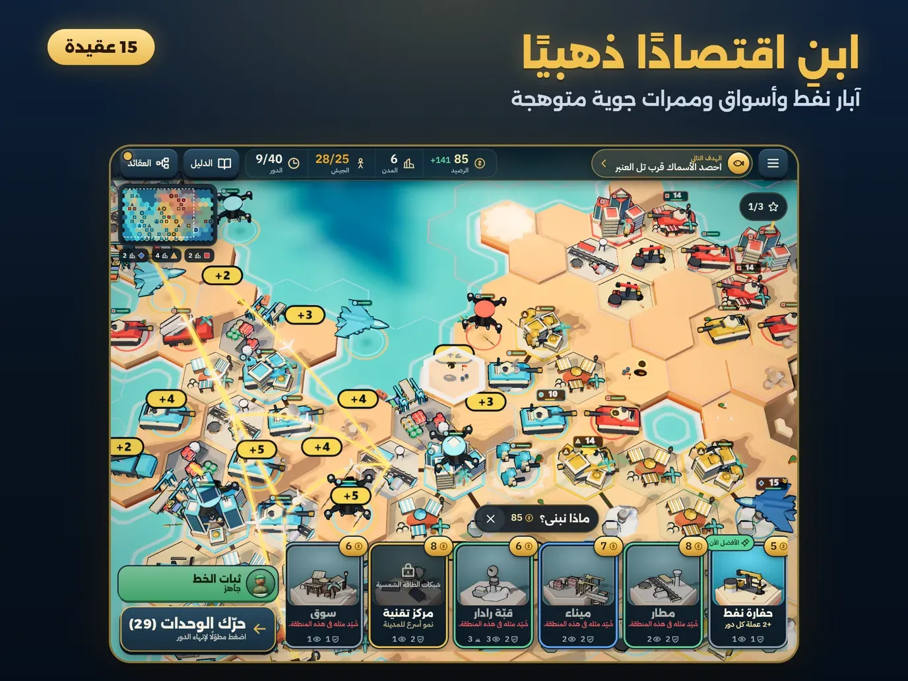
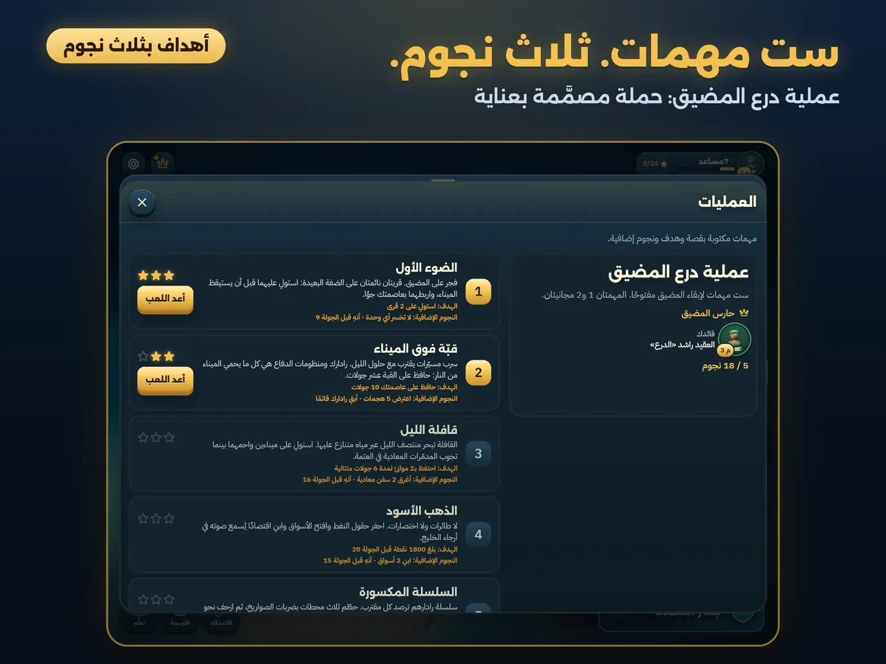
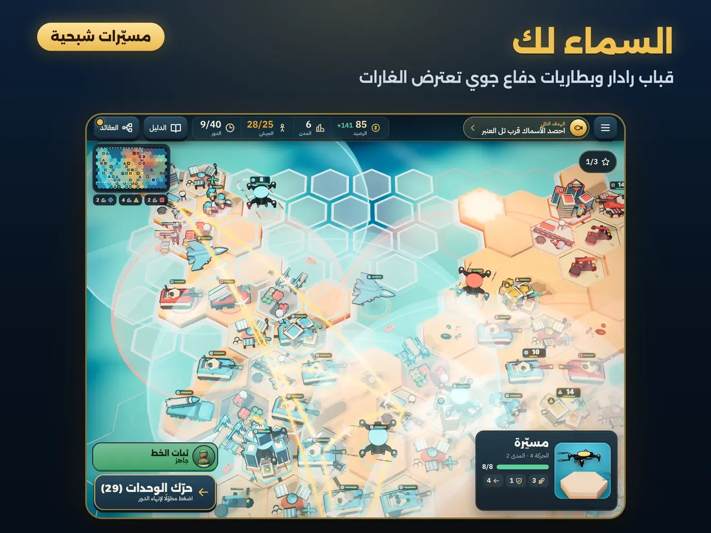

حرب حديثة، مصمَّمة للآيباد
مقاتلات ومسيّرات وسفن حربية وقادة أبطال فوق جزر صحراوية ذهبية، دورًا ذكيًا بعد دور.
قُد ترسانة حديثة
8 وحدات، لكل وحدة دور واضح ونقطة ضعف واضحة: مشاة ومدرّعات ومسيّرات ومقاتلات ودفاع جوي ومدمّرات وحاملات طائرات وصواريخ. المسيّرات الشبحية تتسلل إلى أن يكشفها الرادار. انقل قواتك جوًا بين المطارات واضرب من الحاملات في عرض البحر.
استراتيجية خالصة بلا حظ
قتال محسوم سلفًا: بطاقة المعاينة تعرض النتيجة الدقيقة قبل أن تلمس. ثلاث طرق للنصر: الهيمنة الاقتصادية أو القيادة الشاملة أو السيادة الجوية، ضد ذكاء اصطناعي بأربعة مستويات ومزاياه معلنة بوضوح.
ابنِ اقتصادًا ذهبيًا
مطارات ترتبط بممرات تدرّ الدخل. آبار نفط، وأسواق يزيد دخلها كلما جاورت مبانيك الأخرى، واجنِ خيرات البحر، واستثمر، واغنم. مزايا ترقية المدن و15 عقيدة تصنع إمبراطورية مختلفة في كل مباراة.
قُد مع القادة
قادة أبطال، لكل قائد هالة وقدرة خاصة ومستويات يرتقي فيها. العقيد راشد ينضم إليك مجانًا. تعرّف على الفريق ليلى واللواء فارس والشيخة نورة، وجرّب كل واحد منهم مجانًا في مباراة كاملة.
عملية درع المضيق
حملة مصمَّمة بعناية من 6 مهمات، لكل مهمة أهداف بثلاث نجوم: احمِ الميناء، ورافق قافلة الليل، واكسر سلسلة الرادار. المهمتان الأوليان مجانيتان.
العبوا معًا
تحدّي الأسبوع: الخريطة نفسها للجميع، محاولة واحدة محتسبة، ولوحة صدارة عالمية. تمرير الجهاز حتى 4 قادة على آيباد واحد. مباراة الأصدقاء: حروب عبر الإنترنت برمز دعوة، يلعب كلٌّ في وقته.
عادلة بالتصميم
بلا إعلانات، بلا طاقة، بلا مؤقتات، بلا صناديق حظ، بلا اشتراكات. في الأنماط التنافسية جميع القادة بالمستوى نفسه. عربية وإنجليزية كاملتان مع كتابة صحيحة من اليمين إلى اليسار. العب بلا إنترنت، وتسجيل الدخول اختياري.
شاهدها وهي تعمل






أسئلة شائعة
هل اللعبة مجانية؟
نعم، وبلا حد زمني. الخرائط الصغيرة والمتوسطة، والذكاء السهل والعادي والصعب، وأربعة تكتلات، والعقيد راشد، وأول مهمتين من العملية، وتحدّي الأسبوع، وتمرير الجهاز للاعبَين، والانضمام إلى مباريات الأصدقاء: كلها مجانية. بلا إعلانات وبلا اشتراك، والمشتريات اختيارية.
ماذا يمكنني أن أشتري؟
كل ما عدا ذلك شراء اختياري لمرة واحدة: نسخة القائد (التكتلات الستة، والخرائط الكبيرة والضخمة، وذكاء النخبة، وحروب 3 و4 لاعبين، واستضافة مباريات الأصدقاء)، ونسخة المؤسّسين (كل شيء، الآن وفي المستقبل)، وتكتّلا الطليعة السيبرانية والقيادة المدارية، والفريق ليلى «الصقر»، واللواء فارس «الرعد»، والشيخة نورة «الوسيطة»، ومجلس الحرب، وعملية درع المضيق، وعُدّة المجنّد. لا شيء يُستهلك، والمشاركة العائلية مفعّلة.
هل أستطيع اللعب دون اتصال؟
نعم. المباريات الفردية والعمليات وتمرير الجهاز تعمل دون إنترنت. تسجيل الدخول اختياري ولا يلزم إلا لمباراة الأصدقاء ولوحة صدارة تحدّي الأسبوع.
هل فيها شراء للفوز؟
لا. في تحدّي الأسبوع ومباراة الأصدقاء جميع القادة بالمستوى نفسه، وتُعرض مزايا الذكاء الاصطناعي قبل بدء المباراة.
اشتريتُ على جهاز آخر، كيف أستعيد مشترياتي؟
اضغط «استعادة المشتريات» في الترسانة أو في الإعدادات وأنت مسجّل بنفس معرّف Apple.
اِبلغ الأفق.
مصمَّمة للآيباد. حمّلها من App Store، أو جرّبها الآن في متصفحك.